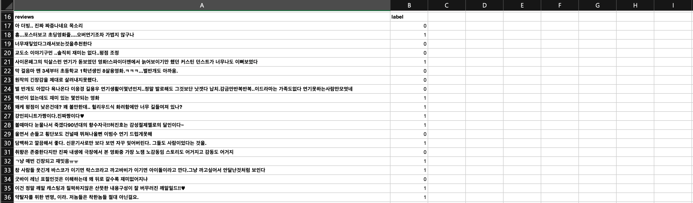

자연어 처리 모델 이용하기
자연어 처리란?
자연어 처리 (Natural Language Processing)는 인간의 언어 현상을 컴퓨터가 처리하고 이해할 수 있도록 하는 것입니다. 주로 번역, 감정 분석, 악플 판단, 정보 검색, 질의응답 시스템 등 여러 분야로 활용되고 있습니다.
두 가지 이상의 데이터를 결합하여 자연어 처리를 하는 방법은 데이터 결합에서 자세한 내용을 확인하실 수 있습니다.
직접 사용해보기
학습 목표 : 고객 항공 이용 데이터를 활용하여 만족도 예측하기
1. 데이터 확인하기

[영화 리뷰.csv]
데이터 특징은 리뷰와 라벨 2가지가 있습니다. 결과값 라벨은 2가지로 나뉘어져 있으며 / 0 - 부정, 1 - 긍정 리뷰입니다.
2. AI 모델 만들기
1) 데이터 업로드하기

데이터 업로드를 위해 DS2 DATASET을 클릭합니다.

인공지능 개발을 위한 데이터 추가를 위해 데이터 추가하기를 클릭합니다.
다운 받은 데이터는 .csv파일이기 때문에 CSV를 클릭하고 다음을 누릅니다.
파일찾기 버튼을 클릭하여 다운받을 데이터를 클릭하여 업로드 합니다.
업로드된 파일을 확인할 수 있으며 데이터 설정에 결과값 컬럽을 선택해 주세요.
데이터가 업로드 중입니다.
2) 인공지능 개발하기
해당 프로젝트에 맞는 학습형태, 선호하는 방식을 선택해 주세요.
1. 학습형태는 '자연어' 를 선택합니다.
2. 선호하는 방식은 2가지로 나뉘어져 있으며, '정확도가 높게' 방식을 선택하겠습니다.
3. 분석/예측하고 싶은 값에 'label - 영화 리뷰'를 클릭합니다.
하단을 보면 데이터 요약과 더불어 학습데이터 사용여부를 선택할 수 있습니다.
(분석/예측하고 싶은 값은 자동으로 사용여부가 해제됩니다.)
데이터 전처리를 선택하여 전처리 하기를 원하는 값을 선택하여 전처리 할 수 있습니다.
전처리 필요 시 전처리하기 버튼을 클릭하여 전처리를 실행합니다.전처리에 대한 자세한 설명은 데이터 전처리에서 확인하실 수 있습니다.
원하는 전처리 기능들을 선택하고 완료를 클릭합니다.
완료된 전처리는 완료 표시를 통해 확인할 수 있습니다.
모든 작업이 완료 된 후, 오른쪽 상단의 Start을 클릭하여 인공지능을 생성합니다.
인공지능을 생성 중입니다.
생성 완료된 인공지능 프로젝트는 AutoML에서 확인할 수 있습니다.
인공지능 진행상태를 확인 할 수있습니다.
3. 인공지능 상세보기/예측하기
CLICK AI 는 여러개의 인공지능 모델을 생성하고 모델별 상세내용을 확인하여 최적의 인공지능 모델을 선택할 수 있습니다. 모든 인공지능 모델 생성이 완료되면 모델별 예측 정확도를 확인 및 비교할 수 있고, 각 모델에 대한 상세보기, 개별예측, 일괄예측이 가능합니다
1) 상세보기
1-1) 모델 성능 평가
Detail 은 모델의 정확도(Accuracy)을 확인할 수 있습니다.
1-2) 분류 모델 성능 평가
분류 모델 성능 평가 지표인 Confusion Matrix를 통해 모델이 얼마나 잘 예측을 하였는지를 나타냅니다
1-3) API
API는 해당 모델을 프로그래밍 언어로 활용할 수 있도록 API 를 제공합니다. CLICK AI 의 API는 JavaScript, Python, Wget, Java 언어를 지원합니다
1-4) 서비스앱 이용하기
"TRAINING MODEL (모델번호)" 우측에 "서비스 앱 공유하기" 버튼을 클릭하면, DS2.AI 외부에서도 예측과 분석할 수 있습니다.
2) 개별예측
개별예측을 선택하면, 각 변수의 값을 입력하여 하나의 예측값을 결과로 얻을 수 있습니다. 단일 예측이나 모델의 정확도를 테스트하기 위한 용도로 활용할 수 있습니다. 키에 맞는 데이터를 입력하여 결과값을 확인할 수 있습니다.
3) 일괄예측
일괄예측을 선택하면, 한꺼번에 많은 데이터를 예측할 수 있습니다. '예측용 템플릿 다운로드하기'를 클릭하여 템플릿을 다운받습니다.
다운받은 템플릿에 데이터를 채워 넣습니다.
데이터를 채워넣은 예측용 템플릿을 업로드하고, 다음을 클릭합니다.
일괄예측이 시작되며, 알림을 통해서 일괄예측 결과를 받아 볼 수있습니다.
4. 인공지능 활용하기
생성된 각 인공지능 모델에 대해 다운로드, 디플로이, 판매하기 형태로 활용이 가능합니다.
1) 다운로드

다운로드를 클릭하면 모델 사용권을 구매할 수 있습니다. 모델 사용권 구매시 딥러닝 모델 파일과 주피터에서 추론 기능을 사용할 수 있는 코드를 함께 이메일로 전송합니다.
* Jetson Nano 2GB Developer Kit 의 칩셋을 별구 구매하시면 운영서버 접속없이 임베디드 제품을 통해 인공지능 모델을 활용할 수 있습니다.
2) 디플로이
디플로이를 선택하시면, 클라우드 서버를 임대하여 해당 모델을 베포, 운영, 관리할 수 있는 통합 MLOPS를 제공합니다.
원하는 클라우드 제공사와 지역을 선택하시면 사용가능한 INSTANCE 목록을 확인할 수 있습니다.
* google 클라우드, azure의 사용을 원하시면 별도의 문의가 필요합니다.
원하는 INSTANCE 선택 후 하단의 "CREATE CLUSTER"를 클릭하시면, 스카이허브 배포하기를 통해 연동된 MLOPS를 활용할 수 있습니다.
3) 판매하기
판매하기를 선택하면 생성한 모델을 DS2.AI 의 AI Market 에 판매할 수 있습니다. 해당 모델의 희망가격과 판매 옵션을 선택하여 판매요청을 클릭해주세요. AI 모델 적정성 검토 및 데이터 보안 절차를 거쳐 AI Market에 업로드 됩니다.
판매 가능 판정한 모델은 AI Market의 상품리스트에서 확인할 수 있으며, 고객의 모델이 필요한 다른 사용자가 구매하면 직접 책정한 금액의 수익이 발생합니다.(20% 수수료 발생)